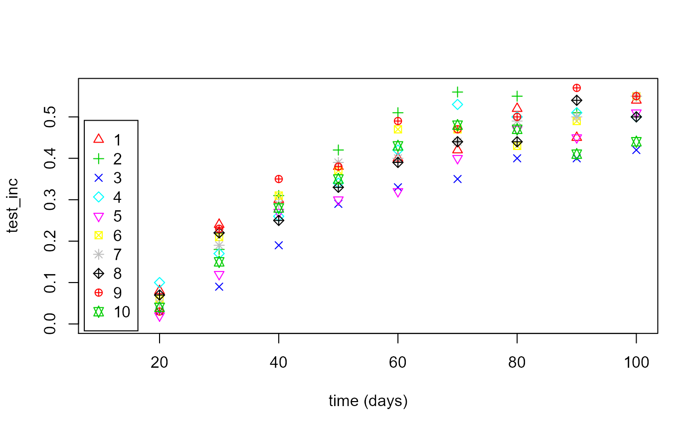
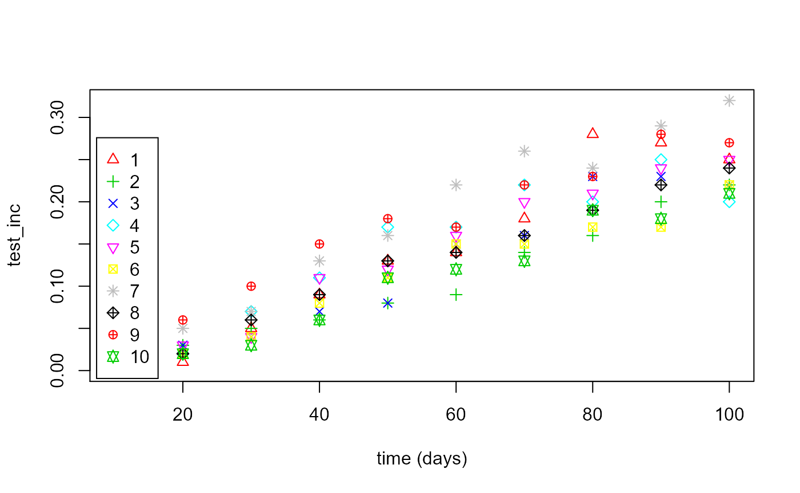
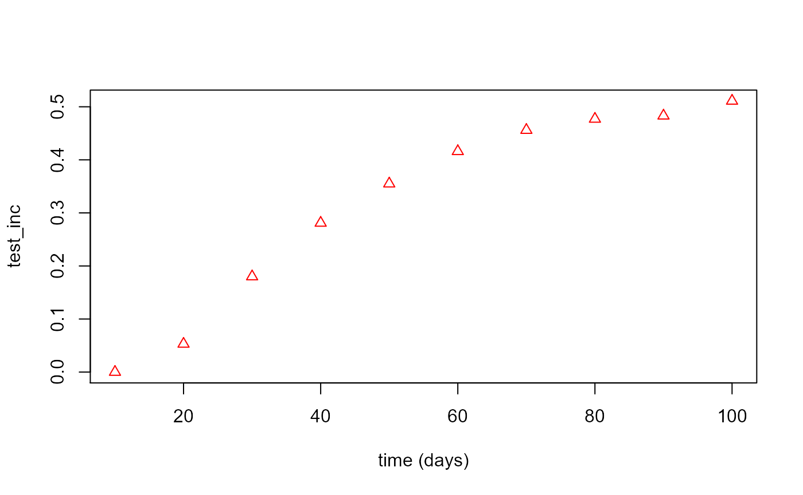
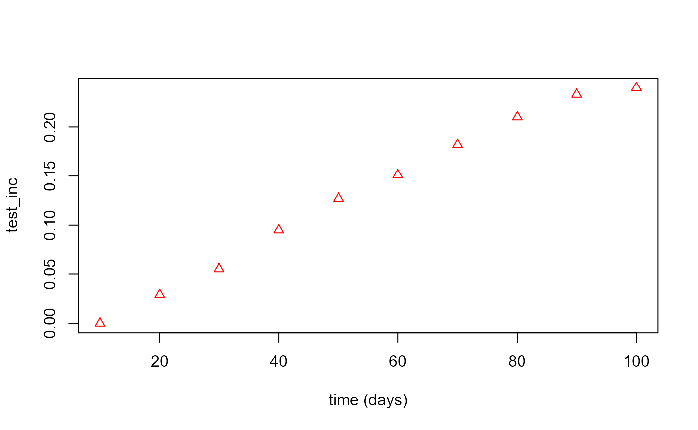
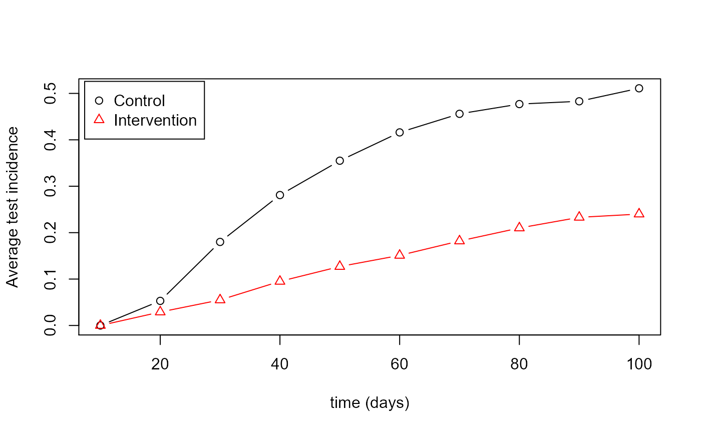

F_worked_example04.RmdThis is an example of how to take previously created main population and trial cluster data and and run stochastic simulations of the individuals in the cohort in each cluster, producing data suitable for power calculations (described in Worked Example 5(link)).
First load the package (install it first if necessary as shown in the Installation article:
library(vectorpower)In this example, the main population and cohort data sets are loaded from RDS files created by saving the results of running the mainpop() function (see Worked Example 2) and the clusters_create() function ( see Worked Example 3).
# Load main population data
mainpop_data <- readRDS(file=url("https://github.com/KeithJF82/vectorpower/raw/master/inst/extdata/DemoFolder1/mainpop_data.Rds"))
# Load control and intervention cluster data
cluster_list_con <-readRDS(file=url("https://github.com/KeithJF82/vectorpower/raw/master/inst/extdata/cluster_list_con.Rds"))
cluster_list_int <-readRDS(file=url("https://github.com/KeithJF82/vectorpower/raw/master/inst/extdata/cluster_list_int.Rds"))Malaria progression in the trial cohort in each cluster is evaluated using the cohort() function, which runs the stochastic individual-based malaria model (the code for which is found in cohort.cpp in the src/ folder). Here the control group of clusters is simulated. [Description of settings]
# Simulate control clusters
test_time_values=10.0*c(1:10) # Time points at which testing takes place
prop_T_c = 0.9 # Proportion of clinical cases receiving treatment independent of trial-related testing
n_patients=100 # Number of patients per cluster
age_start=0.5 # Minimum age of cohort patients
age_end=10.0 # Maximum age of cohort patients
test_type="RDT" # Type of test administered to patients ("clin" = clinical, "RDT" = rapid diagnostic test)
flag_pre_clearing=1 # Integer indicating whether patients given pre-trial prophylaxis (if 1, place all patients into prophylaxis category at start)
censor_period=0.0 # Time period after a positive test during which a patient is not counted towards incidence
flag_reactive_treatment=0 # Integer indicating whether patients are automatically given prophylaxis after a positive test (shifting them into treatment category if a clinical case, prophylaxis category otherwise)
flag_output=0 # Integer indicating whether to show progress of simulation
cohort_data_con <- cohort(mainpop_data=mainpop_data,cluster_data=cluster_list_con,n_patients = n_patients,prop_T_c = prop_T_c,age_start = age_start,age_end = age_end,flag_output = flag_output,
test_time_values = test_time_values, test_type = test_type,
flag_pre_clearing = flag_pre_clearing, censor_period = censor_period,
flag_reactive_treatment = flag_reactive_treatment)The intervention clusters are simulated with the same settings but with the intervention cluster list.
# Simulate intervention clusters
cohort_data_int <- cohort(mainpop_data=mainpop_data,cluster_data=cluster_list_int,n_patients = n_patients,prop_T_c = prop_T_c,age_start = age_start,age_end = age_end,flag_output = 0,
test_time_values = test_time_values, test_type = test_type,
flag_pre_clearing = flag_pre_clearing, censor_period = censor_period,
flag_reactive_treatment = flag_reactive_treatment)Results of the cohort simulations can be extracted quickly from the output in specific formats and displayed using the plot_cohort_data() function. Here, the positive test incidence over time (specified using the “benchmark” variable) is extracted for each cluster (specified by setting flag_output=1)
# Display average positive test rate across control clusters
control_plot <- plot_cohort_data(cohort_data = cohort_data_con,benchmark = "test_inc",flag_output=1)
# Display average positive test rate across intervention clusters
int_plot <- plot_cohort_data(cohort_data = cohort_data_int,benchmark = "test_inc",flag_output=1)
The results data extracted using plot_cohort_data can be further manipulated manually. Here the positive test incidence averaged over all the clusters in each arm is extracted (setting flag_output=2 to specify averaging over all clusters) and the resulting values plotted on one set of axes to compare the control and intervention arms directly.
# Compare prevalence progression in control and intervention clusters on same set of axes
control_plot <- plot_cohort_data(cohort_data = cohort_data_con,benchmark = "test_inc",flag_output=2)
int_plot <- plot_cohort_data(cohort_data = cohort_data_int,benchmark = "test_inc",flag_output=2)
matplot(cohort_data_con$test_time_values,control_plot,type="b",pch=1,lty=1,col=1,xlab="time (days)",ylab="Average test incidence")
matplot(cohort_data_int$test_time_values,int_plot,type="b",pch=2,lty=1,col=2,add=TRUE)
legend("topleft", inset=0.01, legend=c("Control","Intervention"), pch=c(1:2),col=c(1:2),
horiz=FALSE,bg='white',cex=1.0)